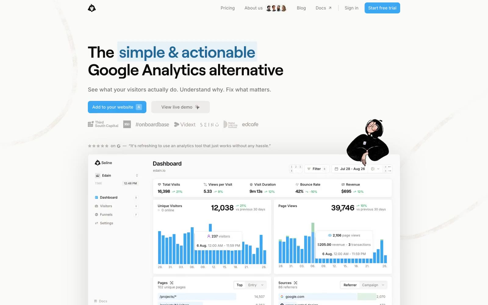

Seline Analytics 的 Design.md 主题展示，围绕B2B 产品、数据仪表盘、企业服务、数据分析组织页面。
Explore Seline Analytics's light SaaS design system: Cloud White #ffffff, Canvas Fog #fafaf9 colors, Inter, roobert typography, and DESIGN.md for AI agents.

#fafaf9: #fafaf9#e5e7eb: #e5e7eb#ffffff: #ffffff#78716c: #78716c#afafae: #afafae#0c0a09: #0c0a09#a8a29e: #a8a29e#c9c5c2: #c9c5c2#d6d3d1: #d6d3d1#c1e1f7: #c1e1f7#3ba6f1: #3ba6f1#928d89: #928d89display: Interbody: Intermono: ui-monospacehints: Inter,ui-monospace